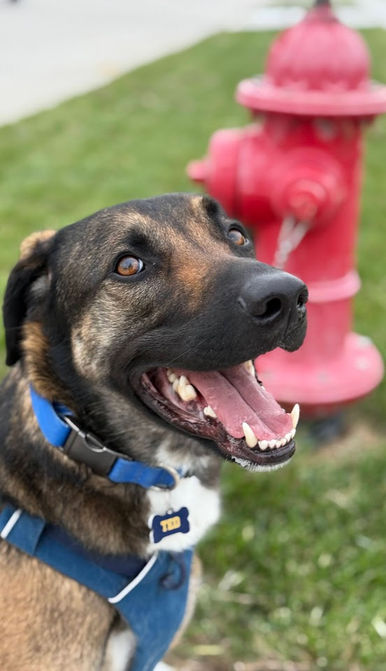

Ted.
About Ted
We adopted Ted from Muddy Paws Second Chance Rescue on October 22nd, 2022, who rescued him and his 10 siblings from Oklahoma.
He’s a Belgian Malinois mix who loves going on walks, where he happily sniffs and pees on everything in sight.
He’s always up for an adventure—especially if it includes a stop for ice cream.
Ted and I have been on
{{number_of_walks}}
walks since
{{first_walk}}
{{total_time}}
Hours Walked
{{total_distance}}
Miles Walked
{{number_of_peepees}}
PeePees Logged
{{number_of_poopoos}}
PooPoos Logged (ha, logged)
Do You Wanna Go On a Walkie?
I track our walks using three iOS shortcuts that I created:

Logs our location once per second while walking
Logs "PeePee" location when pressed
Logs "PooPoo" location when pressed
{{walk_location_map}}
Ted's Home Range
A home range is the area an animal uses in its normal activities of gathering food, mating, and caring for their offspring. Ted gets fed at home and is fixed, so this isn’t really a true home range. But the polygon in the map below shows what his home range might look like based on the areas we normally walk.
Home ranges also exclude “occasional sallies” outside the areas an animal typically uses. So if Ted and I take a long walk out of the neighborhood to an area that we don't normally go, the adaptive local convex hull (a-LoCoH) home range estimator will leave those locations out.
{{home_range_map}}
Ted's Home Range Covers
{{home_range_area}}
Square Miles
For reference, that's about:
{{red_fox_relative_home_range_size}}%
of a
Red Fox's
Home Range
{{mountain_lion_relative_home_range_size}}%
of an
Adult Male Mountain Lion's
Home Range
Where Does Ted Like to Pee?
Ted communicates by leaving scent marks, usually through peeing. These marks carry information about his identity and when he was there, allowing other dogs to detect his recent activity, recognize him, and track which areas he frequently visits.
The map below shows where Ted pees (and poops). If he is peeing to mark what he considers his territory, we can see how that territory might appear to other dogs in the neighborhood. In ecology, an animal's territory is the portion of their home range that they actively defend. So it makes sense that Ted's territory is smaller than his home range.
{{peepee_map}}
But is he actually defending his territory? Or does he just have to pee?
{{peepee_distance_from_home}}
{{peepee_time_from_start}}
As we keep walking and logging peepee locations I'll be able to model whether he:
1) Pees closer to home
2) Pees earlier on in our walks
3) Pee in specific locations
